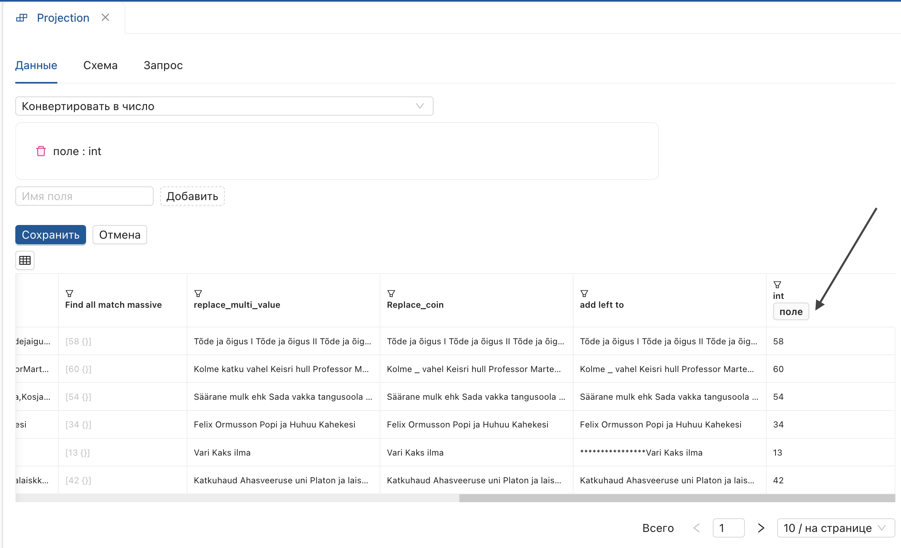
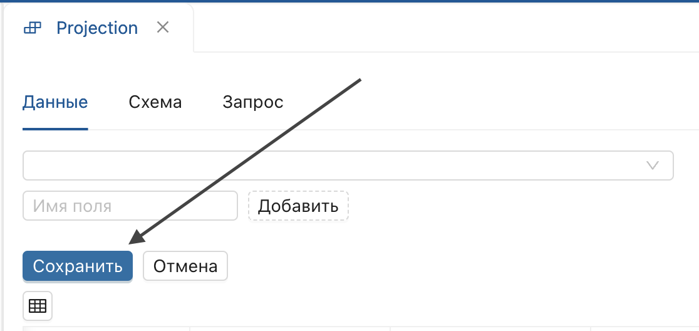

Проекция
"Проекция" — модуль для преобразования данных, позволяющий выполнять несколько настроек за одну версию преобразования.
Чтобы начать работу, отобразите страницу версии настройки и выберите "Проекция" на функциональной панели.

Результат:
Откроется сессия для работы с проекциями.
Поиск и замена
- Поиск первого совпадения: находит первое совпадение по условию.
- Поиск всех совпадений: находит все совпадения по условию.
- Поиск всех совпадений (массив): выполняет поиск всех совпадений и формирует массив значений.
- Заменить несколько значений: заменяет несколько значений через Разделитель.
- Заменить совпадения: заменяет значения исходного поля на указанные в условии.
Поиск и замена продемонстрированы на примере проекций "Поиск всех совпадений (массив)", "Заменить несколько значений". Для остальных операций секция добавляется по аналогии.
Поиск всех совпадений (массив)
- Выберите проекцию "Поиск всех совпадений (массив)".
- Установите параметры поля и введите условие.
-
Введите имя производного поля и нажмите "Добавить".

Результат:
Добавляется производное поле с массивом объектов.

Заменить несколько значений
- Установите параметр «поле» по заголовку.

- Введите заменяемые значения в строке "Найти через разделитель".

- Укажите разделитель.

- Введите заменяющее значение в строке "Заменить (через запятую)".

- Нажмите "Добавить".
Результат:
Производное поле содержит замененные значения.

Если значение необходимо заменить на отсутствие значение, выставьте в поле "Заменить (через запятую)" только запятые.
Работа с числами
- Конвертировать в число: конвертирует строковый тип данных в числовой.
- Римские цифры: преобразует арабские цифры в римские.
Работа с числами продемонстрирована на примере проекции "Конвертировать в число", для остальных операций секция добавляется по аналогии.
Конвертировать в число
- Выберите проекцию «Конвертировать в число» из списка.
- Установите параметр «поле» по заголовку. 
- Введите имя производного поля.
- Нажмите "Добавить".

Результат:
В конец таблицы добавляется производное поле с типом данных integer.
Преобразование строки
- Конвертировать в строку: конвертирует числовой тип данных в строковый.
- Нижний регистр: переводит все значения в нижний регистр.
- Длина строки: отображает длину строки.
- Разбиение строки: разбивает строку по разделителю и складывает элементы в массив строк.
Работа со строками продемонстрирована на примере проекции "Разбиение строки", для остальных операций секция добавляется по аналогии.
Разбиение строки
- Выберите проекцию "Разбиение строки" из списка.
- Введите символ в строке "разделитель".

- Установите параметр "поле" по заголовку.

- Введите имя производного поля и нажмите "Добавить".
В качестве разделителя может быть использован любой символ, в том числе пробел.
Результат:
В конец таблицы будет добавлено производное поле, содержащее массив строк.
 Для сохранения преобразования в шаг настройки нажмите "Сохранить".
Для сохранения преобразования в шаг настройки нажмите "Сохранить".

Редактирование длины строки
- Дополнить слева до: дополняет значение слева до указанного количества символов.
- Дополнить справа до: дополняет значение справа до указанного количества символов.
- Обрезать слева до: обрезает значение слева до указанного количества символов.
- Обрезать справа до: обрезает значения справа до указанного количества символов.
- Обрезать слева: обрезает значение слева на указанное количество символов.
- Обрезать справа: обрезает значение справа на указанное количество символов.
Редактирование длины строки продемонстрировано на примере проекции "Дополнить слева до", для остальных операций секция добавляется по аналогии.
Дополнить слева до
- Назначьте параметр по заголовку.
- Установите количество символов для дополнения строки.
- Введите символ в поле "Символы".

- Введите имя производного поля.
- Нажмите "Добавить".
Результат:
Значения производного поля дополнены слева до указанного количества символов.

Работа с массивами
- Первый элемент: возвращает первый элемент массива строк на верхний уровень.
- Последний элемент: возвращает последний элемент массива строк на верхний уровень.
- Длина массива: отображает длину массива.
- Соединение массива в строку: позволяет соединить массив строк в строку.
- Разбиение строки: разбивает строку по разделителю и складывает элементы в массив строк.
Работа с массивами продемонстрирована на примере проекции "Соединение массива строк в строку", для остальных операций секция добавляется по аналогии.
Соединение массива строк в строку
Проекция применима к типу данных Массив строк и выполняется к данным, полученным в результате применения "Разбиение строки".
- Назначьте параметр "поле" по заголовку.

- Введите имя производного поля и нажмите "Добавить".
Результат:
Производное поле содержит объединенный массив строк в строку.
- Для сохранения преобразования нажмите "Сохранить". 
Объединение и преобразования
- Объединить поля: объединяет значения нескольких полей через разделитель.
Объединить поля
- Выберите проекцию "Объединить поля" из списка.
- Введите произвольный разделитель, например "_", в строке "разделитель".

- Установите переключатель "поля".
- Отметьте поля для объединения, нажав "выбрать" в заголовках полей.

- Введите имя производного поля и нажмите "Добавить".
Результат:
В конец таблицы добавится производное поле, содержащее значения указанных полей, объединенные через разделитель.
 Для сохранения преобразования в производную версию нажмите "Сохранить".
Для сохранения преобразования в производную версию нажмите "Сохранить".
Для удаления избыточных символов в производной строке, воспользуйтесь другими проекциями, например "Заменить совпадения".
Преобразование и форматирование дат
- Преобразование даты в формат «число-месяц-год».
- Преобразование даты в формат «год-месяц-день».
- Выделение года.
- Выделение месяца.
- Выделение дня месяца.
- Количество дней за период.
- Количество месяцев за период.
- Количество лет за период.
Преобразование и форматирование дат продемонстрированы на примере проекции "Выделение года" и "Количество дней за период", для остальных операций секция добавляется по аналогии.
Выделение года
- Выберите операцию «Выделение года».
- Назначьте параметр по полю с датами (например, «1878-01-30»).
 Результат:
Результат:
Операция выделяет год (например, для даты «1878-01-30» должно возвращаться «1878»).
Количество дней за период
- Выберите операцию "Количество дней за период".
- Назначьте параметр "Начало периода" по полю с датами.

- Назначьте параметр "Конец периода".

- Введите имя производного поля и нажмите "Добавить".
Результат:
Операция вычисляет количество дней за указанный период.
 Для сохранения преобразования в производную версию нажмите "Сохранить".
Для остальных операций секция добавляется по аналогии.
Для сохранения преобразования в производную версию нажмите "Сохранить".
Для остальных операций секция добавляется по аналогии.